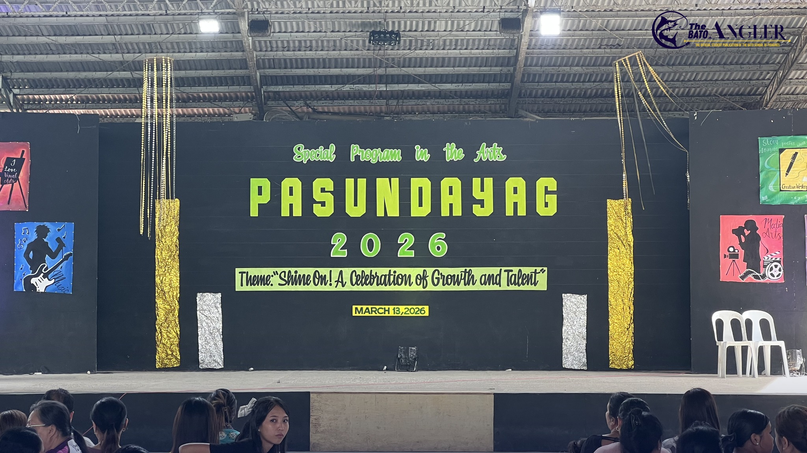

Welcome to
Bato School
of Fisheries
Helping students grow in fisheries, arts, and sports since 1985. Building future leaders in our community.
Why Choose BSF?
Academic Excellence
Consistently producing top-performing students in regional and national competitions.
Strong Community
Building unity through collaboration among students, teachers, and parents.
Holistic Development
We cultivate talent through arts, sports, community service, and leadership.
Green Environment
Promoting sustainability through clean, eco-friendly practices and environmental programs.
2100+Students Enrolled
100Qualified Teachers
20Non-Teaching Staff
Recent Events

Event
March 13, 2026
Pasundayag 2026
A school event showcasing students' talents in music, dance, and arts.
 Election
Election
February 9, 2026
SSLG Election 2026
An event where student leaders present their ideas and vision for the school.
 Event
Event
Date
Title
Description
Welcome to Bato School of Fisheries!
Watch how Bato School of Fisheries shapes the next generation.